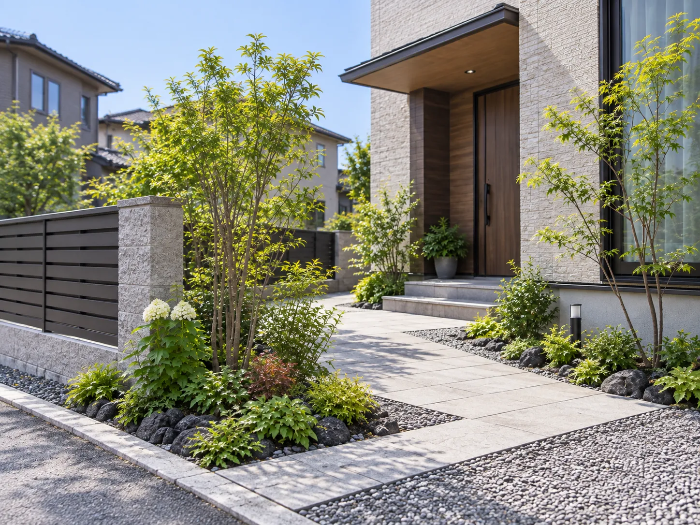
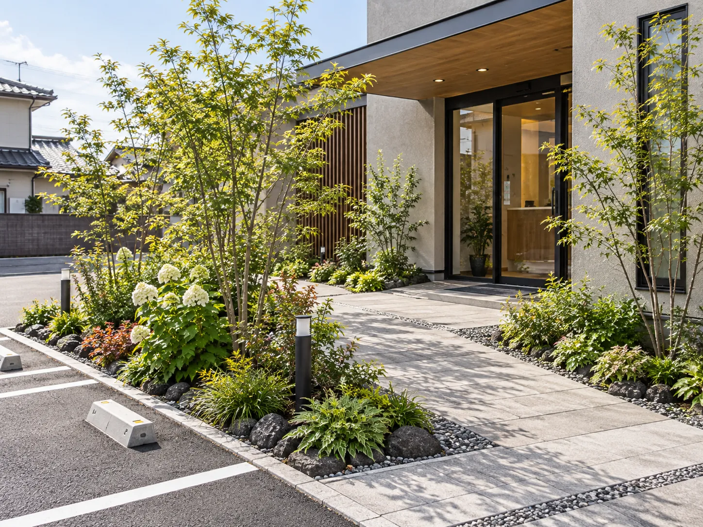
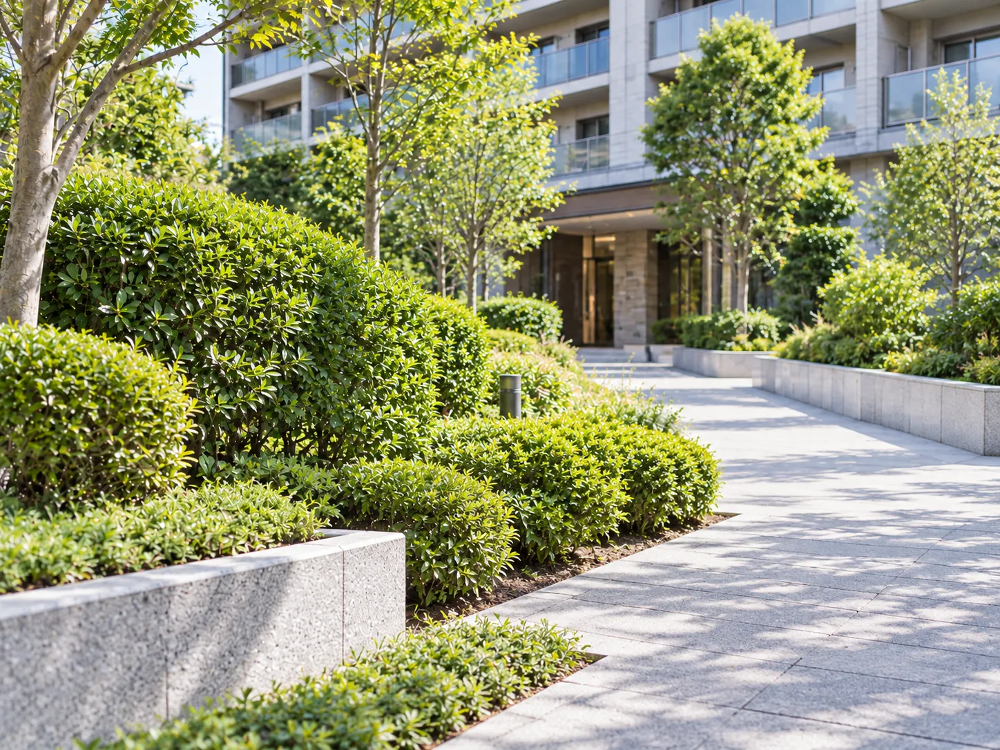
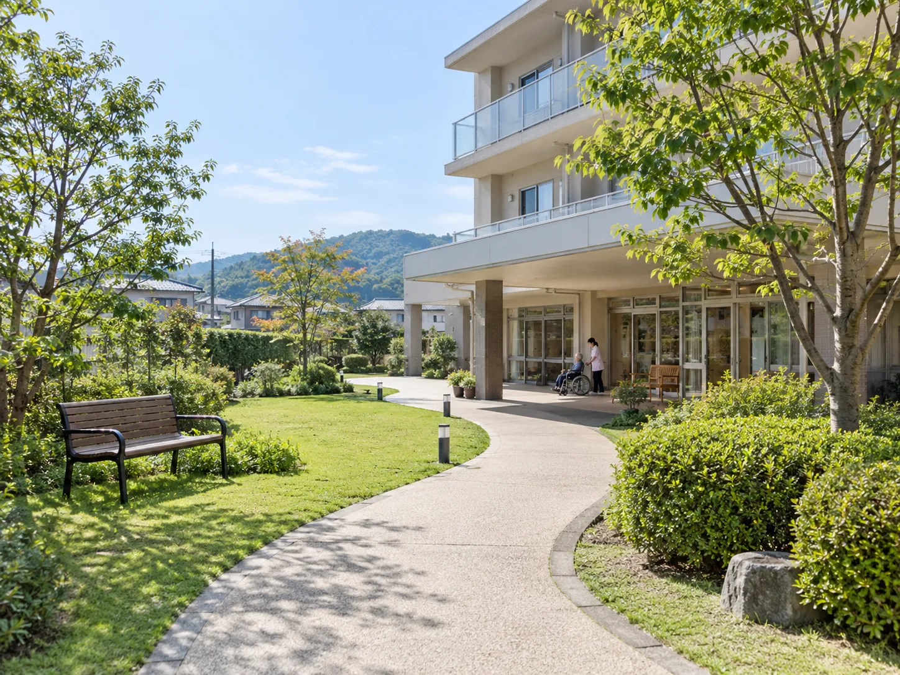
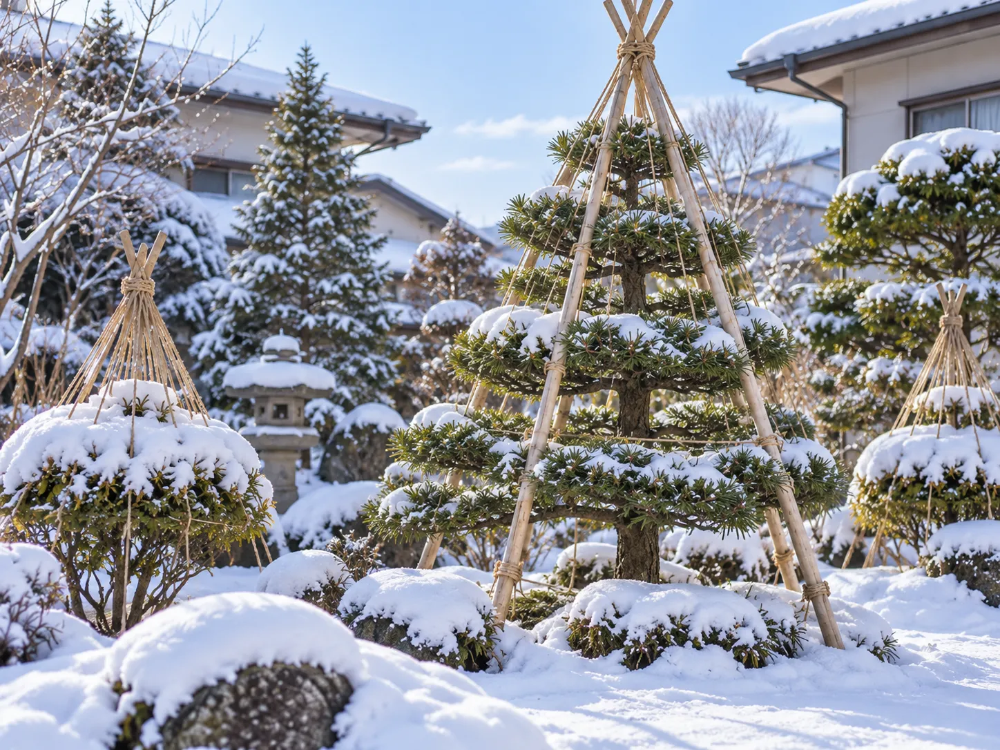

札幌市西区庭リフォーム
使わなくなった庭を、手入れしやすい庭へ
- ご相談
- 子どもが独立して庭を使わなくなり、草取りだけが負担になっている。
- 対応
- 伸びた植木を整理し、園路と砂利で歩きやすく。下草を減らして管理の手間を抑えました。
Works
札幌市とその近郊で手がけた庭仕事の一部です。地域や施工内容に加えて、お客様のお困りごとと、その対応もあわせてご紹介しています。事例は今後も少しずつ追加していきます。
トップ ／ 施工事例
札幌市西区庭リフォーム

札幌市豊平区庭木剪定

札幌市北区庭木伐採・抜根

北広島市玄関まわり植栽

札幌市白石区外構・植栽帯

札幌市中央区植栽管理（年間）

江別市緑地の年間管理

札幌市南区冬囲い
「うちの庭も、これくらいでお願いできる？」というご相談で大丈夫です。
庭の写真を送っていただければ、おおよその費用感を先にお伝えできます。
「この事例と同じように」でも、「まだ迷っているので相談だけ」でも歓迎します。まずは庭を拝見するところから始めます。
受付時間：平日・土 8:00〜18:00／日・祝休み